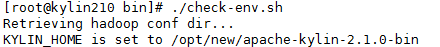
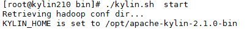

Apache Kylin2.1.0对接FusionInsight_HD_C70¶
适用场景¶
Apache Kylin 2.1.0 <-> FusionInsight HD V100R002C70SPC100
Apache Kylin 2.1.0 <-> FusionInsight HD V100R002C70SPC200
说明¶
Apache Kylin™是一个开源的分布式分析引擎，提供Hadoop之上的SQL查询接口及多维分析（OLAP）能力以支持超大规模数据，最初由eBay Inc. 开发并贡献至开源社区。它能在亚秒内查询巨大的Hive表。
Apache Kylin主要与FusionInsight的Hive和HBase进行对接

环境准备¶
- 修改/etc/hosts
添加本机主机名解析
172.16.52.86 kylin
- 配置NTP服务
使用vi /etc/ntp.conf增加NTP服务的配置
server 172.18.0.18 nomodify notrap nopeer noquery
启动NTP服务
service ntpd start chkconfig ntpd on
- 安装Hadoop client
在FusionInsight Manager服务管理页面下载客户端，上传到kylin安装主机，解压
./install.sh /opt/hadoopclient
- 安装JDK
rpm -Uvh jdk-8u112-linux-x64.rpm
编译Kylin¶
可直接下载的二进制文件的Kylin-2.1.0主版本是基于HBase1.1.1编译的，而FusionInsight使用的HBase版本是1.0.2，这两个版本部分类和方法不兼容，需要重新编译Kylin。
-
下载Kylin-2.1.0基于HBase1.1.1版本的源码码https://github.com/apache/kylin/tree/2.1.x得到kylin-2.1.x.zip
-
安装编译工具
安装maven：
wget http://apache.osuosl.org/maven/maven-3/3.3.9/binaries/apache-maven-3.3.9-bin.tar.gz tar -xzvf apache-maven-3.3.9-bin.tar.gz -C /opt/
修改profile文件vi /etc/profile,增加以下配置
export PATH=$PATH:/opt/apache-maven-3.3.9/bin
导入环境变量
source /etc/profile
执行mvn -v

- 安装git
yum install -y git
- 安装nodejs：
wget https://nodejs.org/dist/v6.10.0/node-v6.10.0-linux-x64.tar.xz --no-check-certificate tar -xvf node-v6.10.0-linux-x64.tar.xz -C /opt/
修改profile文件vi /etc/profile,增加以下配置
export PATH=$PATH:/opt/apache-maven-3.3.9/bin:/opt/node-v6.10.0-linux-x64/bin
导入环境变量
source /etc/profile
执行npm -v

- 修改kylin源码
修改HiveMRInput.java
vi /opt/kylin-2.1.x/source-hive/src/main/java/org/apache/kylin/source/hive/HiveMRInput.java

修改pom.xml
vi /opt/kylin-2.1.x/pom.xml
将HBase、Hive、Hadoop版本改成与FusionInsight HD对应的版本

- 编译打包
unzip kylin-2.1.x.zip cd kylin-2.1.x sed -i "s/2.1.0-SNAPSHOT/2.1.0/g" `grep 2.1.0-SNAPSHOT -rl *` sh build/script/package.sh

等待编译完成，得到Kylin二进制安装包

启动Kylin¶
解压二进制包¶
- 解压上一步骤生成的安装包
tar -xzvf apache-kylin-2.1.0-bin.tar.gz -C /opt
配置环境变量¶
-
配置环境变量：
vi /etc/profile，增加以下配置export KYLIN\_HOME=/opt/apache-kylin-2.1.0-bin
-
导入环境变量
source /etc/profile
-
Kylin启动还需要配置HIVE_CONF、HCAT_HOME，使用
vi /opt/hadoopclient/Hive/component_env，在文件最后增加export HIVE_CONF=/opt/hadoopclient/Hive/config export HCAT_HOME=/opt/hadoopclient/Hive/HCatalog
-
导入环境变量
source /opt/hadoopclient/bigdata_env
-
进行kerberos认证
kinit test
-
Kylin检查环境设置：
cd /opt/apache-kylin-2.1.0-bin/bin ./check-env.sh

修改Kylin配置¶
- 修改kylin.properties：
vi /opt/apache-kylin-2.1.0-bin/conf/kylin.properties
配置Hive client使用beeline：
kylin.source.hive.client=beeline kylin.source.hive.beeline-params=-n root -u 'jdbc:hive2://172.21.42.30:24002,172.21.42.31:24002,172.21.42.32:24002/;serviceDiscoveryMode=zooKeeper;zooKeeperNamespace=hiveserver2;sasl.qop=auth-conf;auth=KERBEROS;principal=hive/hadoop.hadoop.com@HADOOP.COM'
配置获取任务状态时使用kerberos 鉴权：
kylin.job.status.with.kerberos=true
- 去掉不允许修改的配置
FusionInsight不允许修改dfs.replication, mapreduce.job.split.metainfo.maxsize的参数，需要注释掉Kylin所有配置文件中的相关参数，否则构建Cube时会报如下错误：

需要修改以下文件：
- kylin_hive_conf.xml
- kylin_job_conf_inmem.xml
-
kylin_job_conf.xml
-
Hive/HBase配置
将/opt/hadoopclient/Hive/config/hivemetastore-site.xml中的配置合并到hive-site.xml
将/opt/hadoopclient/HBase/hbase/conf/hbase-site.xml中的配置合并到/opt/apache-kylin-2.1.0-bin/conf/kylin_job_conf.xml
- Hive lib路径
kylin的/opt/apache-kylin-2.1.0-bin/bin/find-hive-dependency.sh默认Hive lib路径为大数据集群中Hive的安装路径，若Kylin安装在集群节点上不会有问题，否则需要修改为客户端路径。

启动Kylin¶
- 使用
./kylin.sh start启动Kylin



输入默认用户名密码：ADMIN/KYLIN登陆

Demo测试¶
导入Demo数据¶
- 执行以下命令导入sample数据
cd /opt/apache-kylin-2.1.0-bin/bin ./sample.sh

选择菜单 System -> Actions -> Reload Metadata

选择菜单 System -> Model

构建Cube¶
- 构建默认的kylin_sales_cube

- 选择End Data（Exclude）时间：

- 点击Monitor可以查看build状态：

- Build完成：

- Cube构建成功，状态变为READY

查询表数据¶
- 在Insight页面执行查询